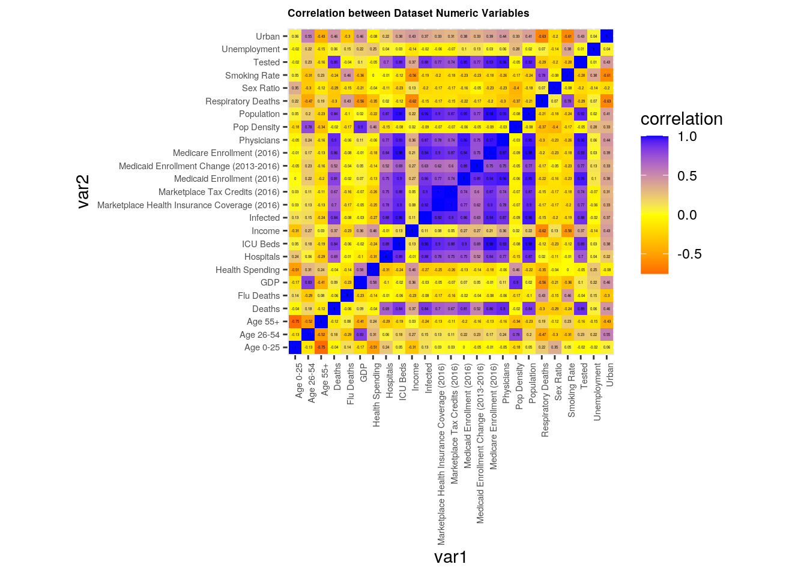
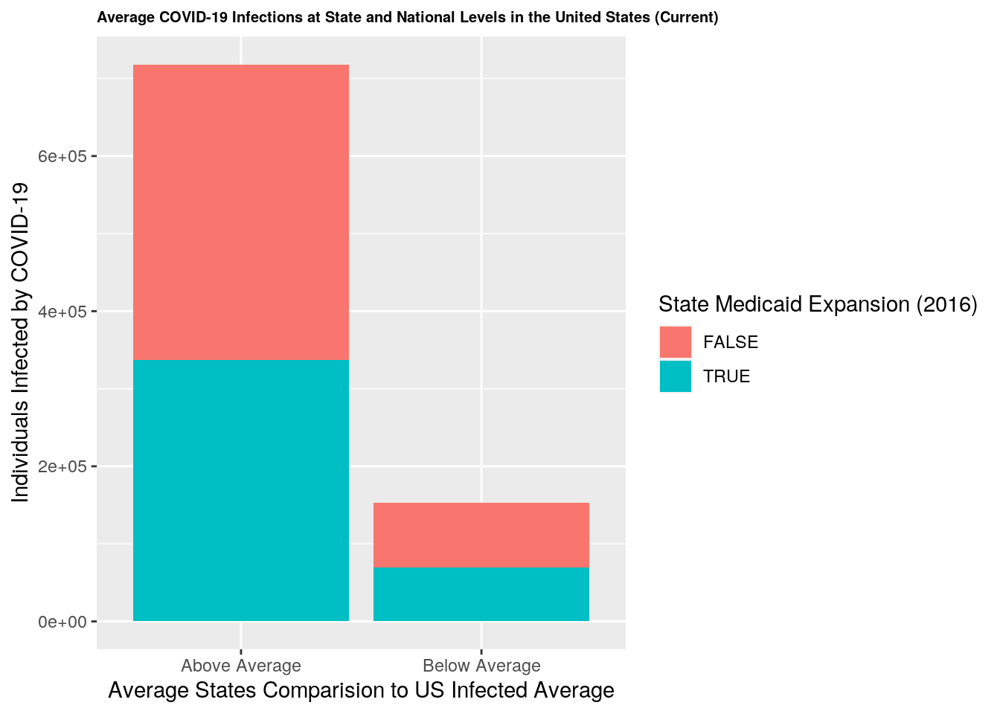
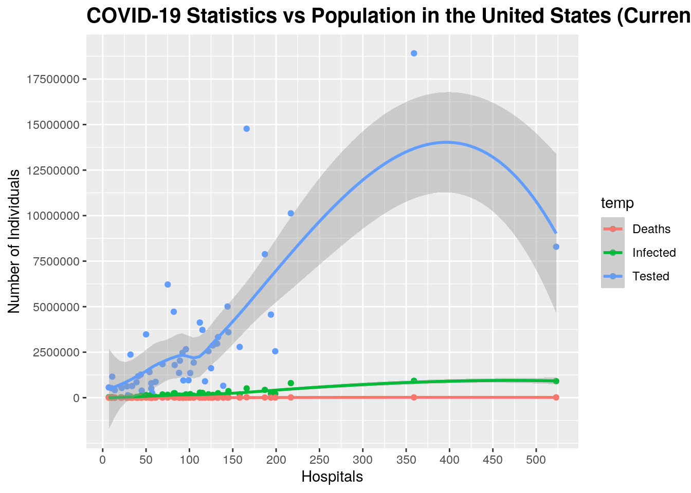
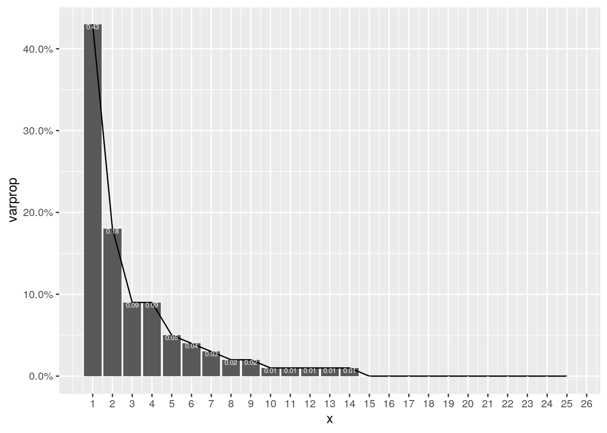
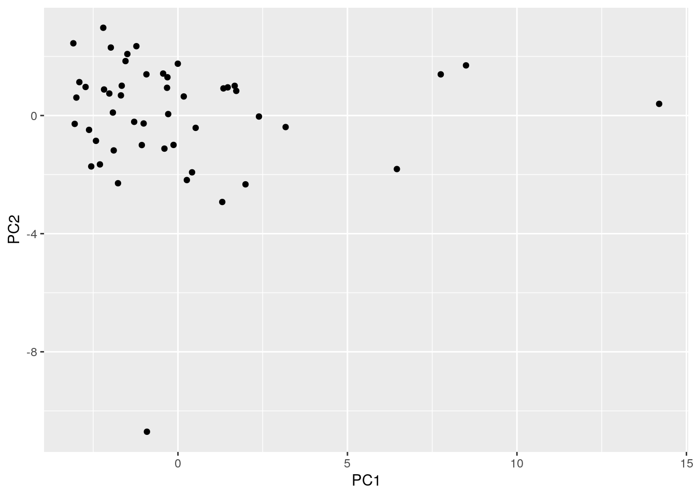
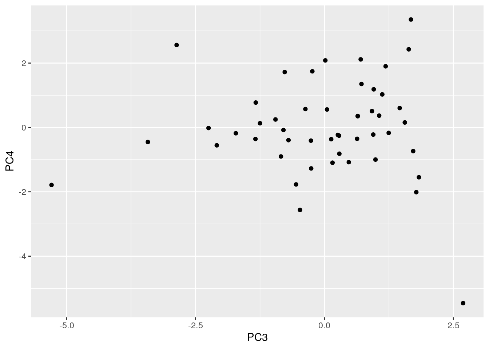
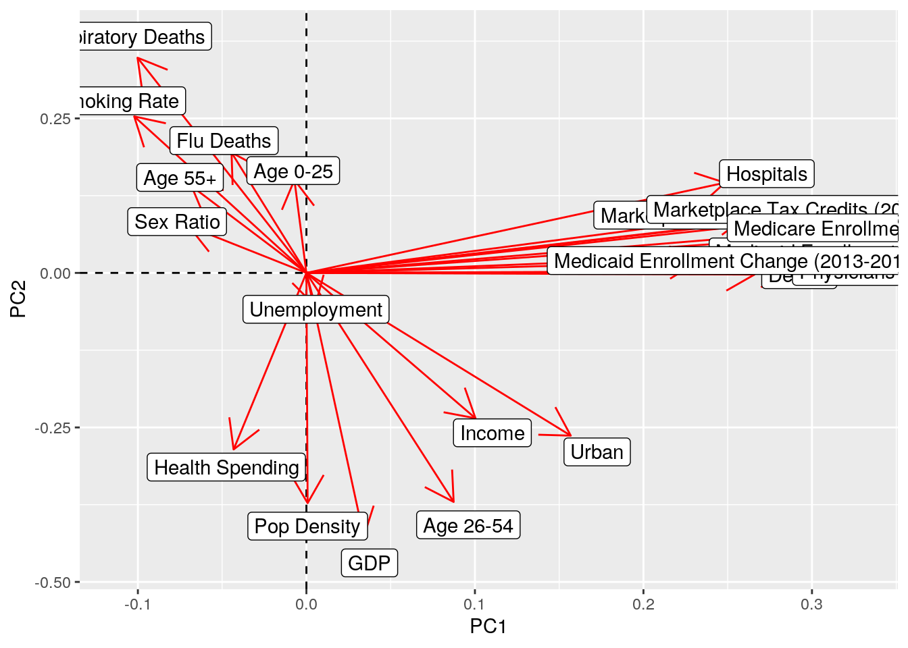
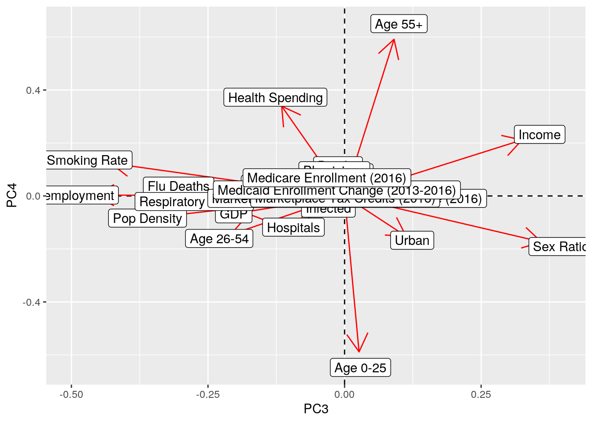

## paste this chunk into the ```{r setup} chunk at the top of your project 1 .Rmd file
knitr::opts_chunk$set(echo = TRUE, eval = TRUE, fig.align = "center", warning = F, message = F,
tidy=TRUE, tidy.opts=list(width.cutoff=60), R.options=list(max.print=100))This is an R Markdown document. Markdown is a simple formatting syntax for authoring HTML, PDF, and MS Word documents. For more details on using R Markdown see http://rmarkdown.rstudio.com.
When you click the Knit button a document will be generated that includes both content as well as the output of any embedded R code chunks within the document. You can embed an R code chunk like this:
I have chosen the datasets “COVID19_state” and “states” for Project 1. They were acquired from the public learning community Kaggle. I was inspiried to study COVID-19 data and their realtionship healthcare trends as COVID-19 is a phenomenon that has greatly impacted our modern world and my interests in medicine. “COVID19_state” is a dataset containing variables that describe COVID-19 predictive numerics based on demographic and public health information. For example, such variables include “Tested”, “Infected”, “Deaths”, etc. “States” is a dataset containing variables that describe healthcare rates before and after the Affordable Care Act was passed. For example, such variables include “Marketplace Health Insurance Coverage (2016)”, “Marketplace Tax Credits (2016)”, “Medicaid Enrollment (2016)”, etc. Both datasets share the variable “states” (the 50 United States). Potential associations that I predict from these datasets include that states that either did not participate in the 2016 state medicaid expansion, have lower rates of individuals enrolled in either medicaid or medicare, have lower numbers of healthcare workers, facilities, and health spending, will have higher COVID-19 rates of infection and deaths.
library(tidyverse)## ── Attaching packages ─────────────────────────────────────── tidyverse 1.3.0 ──## ✓ ggplot2 3.3.3 ✓ purrr 0.3.4
## ✓ tibble 3.0.4 ✓ dplyr 1.0.2
## ✓ tidyr 1.1.2 ✓ stringr 1.4.0
## ✓ readr 1.4.0 ✓ forcats 0.5.0## ── Conflicts ────────────────────────────────────────── tidyverse_conflicts() ──
## x dplyr::filter() masks stats::filter()
## x dplyr::lag() masks stats::lag()covid <- read_csv("~/COVID19_state.csv")##
## ── Column specification ────────────────────────────────────────────────────────
## cols(
## .default = col_double(),
## State = col_character(),
## `School Closure Date` = col_character()
## )
## ℹ Use `spec()` for the full column specifications.healthcare <- read_csv("~/states.csv")##
## ── Column specification ────────────────────────────────────────────────────────
## cols(
## State = col_character(),
## `Uninsured Rate (2010)` = col_character(),
## `Uninsured Rate (2015)` = col_character(),
## `Uninsured Rate Change (2010-2015)` = col_character(),
## `Health Insurance Coverage Change (2010-2015)` = col_double(),
## `Employer Health Insurance Coverage (2015)` = col_double(),
## `Marketplace Health Insurance Coverage (2016)` = col_double(),
## `Marketplace Tax Credits (2016)` = col_double(),
## `Average Monthly Tax Credit (2016)` = col_character(),
## `State Medicaid Expansion (2016)` = col_logical(),
## `Medicaid Enrollment (2013)` = col_double(),
## `Medicaid Enrollment (2016)` = col_double(),
## `Medicaid Enrollment Change (2013-2016)` = col_double(),
## `Medicare Enrollment (2016)` = col_double()
## )covid1 <- covid %>% select(-"Pollution", -"Gini", -"Med-Large Airports", -"Temperature", -"School Closure Date")
healthcare1 <- healthcare %>% select(State, contains("2016"))From the “COVID19_state” dataset, variables “Pollution”, “Gini”, “Med-Large Airports”, “Temperature” and “School Closure Date” were dropped, and from the “states” dataset, variables that did not contain “2016” were dropped. These variables were dropped because I felt that they would not be significantly useful and/or relevant (e.g data older than 2016) in my data analysis, and particularly, the potential associations I would be studying.
join1 <- covid1 %>% left_join(healthcare1, by="State")I conducted a left join to join the “COVID19_state” and “states”. I chose to do this particular join because I felt that it was the simplest way to combine my two datasets by the common ID variable “State”. Additionally, the “healthcare1” dataset had an extra row of data that I was not interested in. Specifically, in “healthcare1”, there was an additional row in the “State” column containing data on the overall United States. Because the focus of my project is on individual states, I decided to omit this data. No observations in “covid1” were dropped, and one observation in “healthcare1” was dropped.
library(dplyr)
mean(join1$Infected)## [1] 179626.7join1 %>% mutate(US.Infected.Average = case_when(Infected>179627 ~ "Above Average", Infected<179627 ~ "Below Average")) %>% rename("SME"= `State Medicaid Expansion (2016)`) %>% select("State", "Infected", everything()) %>% group_by(US.Infected.Average) %>% filter(str_detect(State, "A")) %>% arrange(desc(State)) %>% summarize_if(is.numeric, mean, na.rm=T) ## # A tibble: 2 x 26
## US.Infected.Ave… Infected Tested Deaths Population `Pop Density` `ICU Beds`
## <chr> <dbl> <dbl> <dbl> <dbl> <dbl> <dbl>
## 1 Above Average 221516. 1.57e6 4478. 6143558. 80.9 1546
## 2 Below Average 65349 9.92e5 1034. 1886500. 29.8 426.
## # … with 19 more variables: Income <dbl>, GDP <dbl>, Unemployment <dbl>, `Sex
## # Ratio` <dbl>, `Smoking Rate` <dbl>, `Flu Deaths` <dbl>, `Respiratory
## # Deaths` <dbl>, Physicians <dbl>, Hospitals <dbl>, `Health Spending` <dbl>,
## # Urban <dbl>, `Age 0-25` <dbl>, `Age 26-54` <dbl>, `Age 55+` <dbl>,
## # `Marketplace Health Insurance Coverage (2016)` <dbl>, `Marketplace Tax
## # Credits (2016)` <dbl>, `Medicaid Enrollment (2016)` <dbl>, `Medicaid
## # Enrollment Change (2013-2016)` <dbl>, `Medicare Enrollment (2016)` <dbl>join1 <- join1 %>% mutate(US.Infected.Average = case_when(Infected>179627 ~ "Above Average", Infected<179627 ~ "Below Average")) %>% rename("SME"= `State Medicaid Expansion (2016)`)
sum_join1 <- join1 %>% select_if(is.numeric) %>% summarize_all(funs(mean, sd, var, min, max)) %>% pivot_longer(contains("_")) %>% separate(name, into = c("Variable", "Stat"), sep = "_") %>% pivot_wider(names_from = "Variable",values_from="value")## Warning: `funs()` is deprecated as of dplyr 0.8.0.
## Please use a list of either functions or lambdas:
##
## # Simple named list:
## list(mean = mean, median = median)
##
## # Auto named with `tibble::lst()`:
## tibble::lst(mean, median)
##
## # Using lambdas
## list(~ mean(., trim = .2), ~ median(., na.rm = TRUE))
## This warning is displayed once every 8 hours.
## Call `lifecycle::last_warnings()` to see where this warning was generated.group_join1 <- join1 %>% group_by(US.Infected.Average, SME) %>% select_if(is.numeric) %>% summarize_all(funs(min, max)) %>% pivot_longer(contains("_")) %>% separate(name, into = c("Variable", "Stat"), sep = "_") %>% pivot_wider(names_from = "Variable", values_from = "value")
head(sum_join1)## # A tibble: 5 x 26
## Stat Tested Infected Deaths Population `Pop Density` `ICU Beds` Income
## <chr> <dbl> <dbl> <dbl> <dbl> <dbl> <dbl> <dbl>
## 1 mean 2.90e 6 1.80e 5 4.36e3 6.50e 6 432. 1466. 5.16e4
## 2 sd 3.59e 6 2.08e 5 5.64e3 7.45e 6 1647. 1562. 8.22e3
## 3 var 1.29e13 4.33e10 3.18e7 5.55e13 2713353. 2440233. 6.76e7
## 4 min 1.34e 5 2.22e 3 5.80e1 5.67e 5 1.29 94 3.80e4
## 5 max 1.89e 7 9.31e 5 2.58e4 3.99e 7 11815. 7338 7.46e4
## # … with 18 more variables: GDP <dbl>, Unemployment <dbl>, `Sex Ratio` <dbl>,
## # `Smoking Rate` <dbl>, `Flu Deaths` <dbl>, `Respiratory Deaths` <dbl>,
## # Physicians <dbl>, Hospitals <dbl>, `Health Spending` <dbl>, Urban <dbl>,
## # `Age 0-25` <dbl>, `Age 26-54` <dbl>, `Age 55+` <dbl>, `Marketplace Health
## # Insurance Coverage (2016)` <dbl>, `Marketplace Tax Credits (2016)` <dbl>,
## # `Medicaid Enrollment (2016)` <dbl>, `Medicaid Enrollment Change
## # (2013-2016)` <dbl>, `Medicare Enrollment (2016)` <dbl>head(group_join1)## # A tibble: 6 x 28
## # Groups: US.Infected.Average [2]
## US.Infected.Ave… SME Stat Tested Infected Deaths Population `Pop Density`
## <chr> <lgl> <chr> <dbl> <dbl> <dbl> <dbl> <dbl>
## 1 Above Average FALSE min 1.36e6 183418 2113 4908621 89.7
## 2 Above Average FALSE max 1.01e7 909257 18097 29472295 410.
## 3 Above Average TRUE min 1.79e6 185185 4390 4645184 65.0
## 4 Above Average TRUE max 1.89e7 930628 25838 39937489 1215.
## 5 Below Average FALSE min 1.34e5 6799 87 567025 5.84
## 6 Below Average FALSE max 1.84e6 178917 3946 5210095 173.
## # … with 20 more variables: `ICU Beds` <dbl>, Income <dbl>, GDP <dbl>,
## # Unemployment <dbl>, `Sex Ratio` <dbl>, `Smoking Rate` <dbl>, `Flu
## # Deaths` <dbl>, `Respiratory Deaths` <dbl>, Physicians <dbl>,
## # Hospitals <dbl>, `Health Spending` <dbl>, Urban <dbl>, `Age 0-25` <dbl>,
## # `Age 26-54` <dbl>, `Age 55+` <dbl>, `Marketplace Health Insurance Coverage
## # (2016)` <dbl>, `Marketplace Tax Credits (2016)` <dbl>, `Medicaid Enrollment
## # (2016)` <dbl>, `Medicaid Enrollment Change (2013-2016)` <dbl>, `Medicare
## # Enrollment (2016)` <dbl>The wrangling of the data proceeded by the following steps: first, I demonstrated the use of the six core ‘dpylr’ functions. I created an additional categorical variable, “US.Infected.Average”, as a function of the variable “Infected”, by dichotomizing the numeric variable “Infected” into values that were “Above Average” or “Below Average” of the total average number of individuals infected by COVID-19 in the US (17,9627). Next, I selected for variables “State” and “Infected”, grouped by “US.Infected.Average”, filtered by the variable “State” with values that started with the letter “A”, arranged the values in a descending order by “State”, and calculated the mean of numeric variables by the summarize_if function. The final output resulted in the means of all numeric variables for either “Above Average” or “Below Average” filtered states. All direct, average COVID-19 values, including number of infected, tested, and dead individuals, were significantly higher for the “Above Average” states in comparision to the “Below Average”. Specifically, the “Above Average” states averages of 221515.5 infected, 1574511.0 tested, and 4477.5 dead individuals, verses the “Below Average” states averages of 65349.0 infected, 991799.5 tested, and 1034.5 death individuals. Furthermore, in the “Above Average” states, the average values for population and population density were significantly higher (almost three to four-fold). This is could be due to the fact the simply having more individuals condensed in these areas encouraged the spread of COVID-19 and made correct practicing of social distancing strategies harder. However, in the “Above Average” states, the average values for health care accessibility, including ICU beds, physicians, hospitals, Marketplace Health Insurance Coverage (2016), Medicaid Enrollment (2016), and Medicare Enrollment (2016), were also significantly higher. Higher access to health care may lead to easier administration and accessibility to COVID-19 testing.
Following the use of the six core ‘dpylr’ funcions, summary statistics were calculated for all numeric variables. For all numeric variables in the dataset, summary functions mean, sd, var, min, max were used, and the resulting data was reshaped using pivot_longer and pivot_wider for easier analysis by creating new columns describing the variable of interest and the summary statistic that was calculated. Following this, summary functions min and max were used for all numeric variables in the dataset after grouping by the categorical variables “US.Infected.Average” and "SME, and the resulting data was also reshaped using pivot_longer and pivot_wider for easier analysis by creating new columns describing the variable of interest and the summary statistic that was calculated. Tables of both summary function data were created using kable. All numeric variables showed high variance (var), suggesting that there is are wide differences in COVID-19 presence and its health and social implications, likely due to the high variance in health care accessibility (enrollment in Medicaid/Medicare, number of hospitals, number of physicians, etc.) across the states.
join1 <- covid1 %>% left_join(healthcare1, by="State")
library(dplyr)
library(ggplot2)
join1 <- join1 %>% mutate(US.Infected.Average = case_when(Infected>179627 ~ "Above Average", Infected<179627 ~ "Below Average")) %>% rename("SME"= `State Medicaid Expansion (2016)`) %>% mutate(Smoking_Rate_Average = case_when(`Smoking Rate`>17 ~ "Above Average", `Smoking Rate`<17 ~ "Below Average"))
joincor <- join1 %>% select_if(is.numeric) %>% cor(use="pair")
tidyjoincor <- joincor %>% as.data.frame %>% rownames_to_column("var1") %>% pivot_longer(-1, names_to = "var2", values_to = "correlation")
tidyjoincor %>% ggplot (aes(var1, var2, fill = correlation)) + geom_tile() + scale_fill_gradient2(low = "red", mid = "yellow", high = "blue") + geom_text(aes(label=round(correlation, 2)), color = "black", size = 0.8) + theme(plot.title = element_text(size = 6.5, face = "bold"), axis.text.x = element_text(angle = 90, hjust = 1, size = 5.5), axis.text.y = element_text(angle = 0, hjust = 1, size = 5.5)) + coord_fixed() + ggtitle("Correlation between Dataset Numeric Variables")
The correlation heatmap demonstrates several notable variable relationships. There are strong, positively correlated relationships (correlation coefficients ranging from 0.5 - 1) between all health insurance variables. Specifically, Medicare Enrollment, Medicaid Enrollment Change (2013-2016), Medicaid Enrollment (2016), and Marketplace Health Insurance Coverage (2016) are all strongly, positively correlated with each other. For example, this suggests that states with higher levels of marketplace health insurance coverage also have higher rates of Medicare and Medicaid Enrollment, and that there is generally a stronger emphasis on access to health insurance. These health insurance variables also have strong, positively correlated relationships with the number of individuals who tested or died from COVID-19. Additionally, other variables relating to age and other diseases have weak, positively correlated relationships with all dataset variables.
ggplot(join1, aes(x = US.Infected.Average, y = Infected, fill=SME)) + geom_bar(stat = "summary", fun=mean) + ggtitle("Average COVID-19 Infections at State and National Levels in the United States (Current)") + xlab("Average States Comparision to US Infected Average") + ylab("Individuals Infected by COVID-19") + theme(plot.title = element_text(size = 7.5, face = "bold")) + labs(fill = "State Medicaid Expansion (2016)")
The stacked barplot demonstrates several notable relationships. There are significantly less mean individuals infected by COVID-19 in each state that are below the national state average than mean individuals infected in each state that are above the national state average. Additionally, there is no significant difference in the amount of states that did participate in the 2016 State Medicaid Expansion (SME), suggesting that there is no strong relationship between infected individuals and state participation in SME.
join1 %>% select(Hospitals, Tested, Infected, Deaths) %>% pivot_longer(cols = c(Tested, Infected, Deaths), names_to = "temp") %>% ggplot() + geom_point(aes(x=Hospitals, y= value, color = temp)) + geom_smooth(aes(x=Hospitals, y= value, color = temp)) + scale_x_continuous(breaks = seq(0, 600, 50)) + scale_y_continuous(breaks = seq(0, 200000000, 2500000)) + ggtitle("COVID-19 Statistics vs Population in the United States (Current)") + theme(plot.title = element_text(size = 15, face = "bold")) + ylab("Number of Individuals") + labs(fill = "COVID-19 Stats")## `geom_smooth()` using method = 'loess' and formula 'y ~ x'
The scatterplot demonstrates several notable relationships. There is a strong, linear relationship between the number of hospitals and the number of individuals who tested for COVID-19 per state. This relationship continues until it approaches a suggested, optimal number of hospitals (~400), in which the relationship between the number of hospitals and the number of individuals who tested for COVID-19 per state becomes inversly related. This suggests that as the number of hospitals, and therefore COVID-19 tests and general healthcare accessibility increases, the number of individuals tested also increases. However, when the suggested, optimal number of hospitals is reached, as the number of hospitals increase, COVID-19 tests and general health care accessibility becomes so normalized and/or accessible, that individuals perceive these resources as an expectation, and do not use them to their full potential. Additionally, there is a weak, linear relationship between the number of hospitals and the number of individuals who were infected or tested for COVID-19 per state. This suggests that the number of hospitals are not strong indicators of the number of individuals who were infected or tested for COVID-19, and/or that the tested to infected/death rate is relatively small.
join1 <- covid1 %>% left_join(healthcare1, by="State")
join1 <- join1 %>% select(-`State Medicaid Expansion (2016)`) %>% na.omit()
join1_nums <- join1 %>% select_if(is.numeric) %>% scale
rownames(join1_nums) <- join1$State
join1_pca <- princomp(join1_nums)
names(join1_pca)## [1] "sdev" "loadings" "center" "scale" "n.obs" "scores" "call"eigval <- join1_pca$sdev^2
varprop = round(eigval/sum(eigval), 2)
ggplot() + geom_bar(aes(y=varprop, x=1:25), stat="identity") + xlab("x") + geom_path(aes(y = varprop, x = 1:25)) + geom_text(aes(x = 1:25, y = varprop, label = round(varprop, 2)), vjust=1, col="white", size=2) + scale_y_continuous(breaks = seq(0, .6, .1), labels = scales::percent) + scale_x_continuous(breaks=1:50)
round(cumsum(eigval)/sum(eigval), 2)## Comp.1 Comp.2 Comp.3 Comp.4 Comp.5 Comp.6 Comp.7 Comp.8 Comp.9 Comp.10
## 0.43 0.61 0.70 0.79 0.84 0.88 0.91 0.93 0.95 0.96
## Comp.11 Comp.12 Comp.13 Comp.14 Comp.15 Comp.16 Comp.17 Comp.18 Comp.19 Comp.20
## 0.97 0.98 0.99 0.99 0.99 1.00 1.00 1.00 1.00 1.00
## Comp.21 Comp.22 Comp.23 Comp.24 Comp.25
## 1.00 1.00 1.00 1.00 1.00eigval## Comp.1 Comp.2 Comp.3 Comp.4 Comp.5 Comp.6
## 1.064055e+01 4.381553e+00 2.205889e+00 2.169407e+00 1.237919e+00 9.202015e-01
## Comp.7 Comp.8 Comp.9 Comp.10 Comp.11 Comp.12
## 6.958549e-01 6.045276e-01 4.068229e-01 3.226038e-01 2.167834e-01 1.967374e-01
## Comp.13 Comp.14 Comp.15 Comp.16 Comp.17 Comp.18
## 1.434651e-01 1.230189e-01 7.452473e-02 5.566872e-02 3.683282e-02 1.973512e-02
## Comp.19 Comp.20 Comp.21 Comp.22 Comp.23 Comp.24
## 1.657664e-02 8.350458e-03 5.191031e-03 3.259758e-03 2.427642e-03 1.698815e-03
## Comp.25
## 2.021489e-04summary(join1_pca, loadings=T)## Importance of components:
## Comp.1 Comp.2 Comp.3 Comp.4 Comp.5
## Standard deviation 3.2619849 2.0932159 1.48522363 1.47289070 1.11261786
## Proportion of Variance 0.4344889 0.1789134 0.09007381 0.08858412 0.05054834
## Cumulative Proportion 0.4344889 0.6134023 0.70347614 0.79206026 0.84260860
## Comp.6 Comp.7 Comp.8 Comp.9 Comp.10
## Standard deviation 0.95927133 0.83417916 0.77751371 0.63782668 0.56798219
## Proportion of Variance 0.03757489 0.02841407 0.02468488 0.01661193 0.01317299
## Cumulative Proportion 0.88018350 0.90859757 0.93328245 0.94989438 0.96306737
## Comp.11 Comp.12 Comp.13 Comp.14
## Standard deviation 0.46560008 0.443550852 0.378767856 0.350740476
## Proportion of Variance 0.00885199 0.008033442 0.005858158 0.005023271
## Cumulative Proportion 0.97191936 0.979952800 0.985810958 0.990834229
## Comp.15 Comp.16 Comp.17 Comp.18
## Standard deviation 0.272992176 0.235942194 0.191918781 0.1404817287
## Proportion of Variance 0.003043093 0.002273139 0.001504007 0.0008058506
## Cumulative Proportion 0.993877322 0.996150461 0.997654468 0.9984603183
## Comp.19 Comp.20 Comp.21 Comp.22
## Standard deviation 0.1287502967 0.091380838 0.0720488077 0.0570942872
## Proportion of Variance 0.0006768794 0.000340977 0.0002119671 0.0001331068
## Cumulative Proportion 0.9991371977 0.999478175 0.9996901418 0.9998232486
## Comp.23 Comp.24 Comp.25
## Standard deviation 4.927111e-02 4.121668e-02 1.421791e-02
## Proportion of Variance 9.912872e-05 6.936828e-05 8.254412e-06
## Cumulative Proportion 9.999224e-01 9.999917e-01 1.000000e+00
##
## Loadings:
## Comp.1 Comp.2 Comp.3 Comp.4 Comp.5
## Tested 0.286 0.134
## Infected 0.288
## Deaths 0.266 0.104
## Population 0.299
## Pop Density -0.372 -0.328 -0.167
## ICU Beds 0.292
## Income 0.100 -0.235 0.325 0.211 0.360
## GDP -0.427 -0.184
## Unemployment -0.456 0.340
## Sex Ratio 0.360 -0.173 0.508
## Smoking Rate -0.102 0.253 -0.428 0.124 0.135
## Flu Deaths 0.195 -0.276 0.221
## Respiratory Deaths -0.100 0.348 -0.250
## Physicians 0.292 0.116
## Hospitals 0.248 0.146 -0.107
## Health Spending -0.286 -0.115 0.339 0.317
## Urban 0.157 -0.263 0.113 -0.152 -0.157
## Age 0-25 0.151 -0.588 0.184
## Age 26-54 -0.371 -0.209 -0.146
## Age 55+ 0.140 0.591 -0.158
## Marketplace Health Insurance Coverage (2016) 0.270 -0.191
## Marketplace Tax Credits (2016) 0.262 -0.212
## Medicaid Enrollment (2016) 0.286 0.177
## Medicaid Enrollment Change (2013-2016) 0.232 0.236
## Medicare Enrollment (2016) 0.296
## Comp.6 Comp.7 Comp.8 Comp.9
## Tested 0.124
## Infected 0.145
## Deaths 0.160 0.176 -0.361 0.183
## Population
## Pop Density 0.121 0.168 -0.140
## ICU Beds
## Income 0.155 0.159 0.187
## GDP 0.206 0.159
## Unemployment -0.144 -0.506 -0.480 -0.182
## Sex Ratio -0.382 -0.185
## Smoking Rate -0.159 0.225
## Flu Deaths 0.655 0.218 0.154 -0.474
## Respiratory Deaths 0.250 0.407
## Physicians 0.118
## Hospitals -0.133 0.223 -0.143 0.120
## Health Spending -0.253 0.335 -0.119
## Urban 0.256 -0.324 -0.270
## Age 0-25 0.187 -0.128
## Age 26-54 0.239 0.281
## Age 55+ -0.108
## Marketplace Health Insurance Coverage (2016) -0.236 -0.326
## Marketplace Tax Credits (2016) -0.252 -0.374
## Medicaid Enrollment (2016) -0.137 0.185
## Medicaid Enrollment Change (2013-2016) -0.456 0.514
## Medicare Enrollment (2016)
## Comp.10 Comp.11 Comp.12 Comp.13
## Tested 0.152 0.266 0.132
## Infected 0.128
## Deaths 0.245 0.251 0.336
## Population -0.150
## Pop Density 0.103 0.356 0.138
## ICU Beds -0.102 -0.107
## Income -0.302 0.104 -0.326 0.199
## GDP 0.241
## Unemployment 0.271
## Sex Ratio -0.311 -0.123 0.386 0.114
## Smoking Rate -0.248 0.178 -0.128 -0.359
## Flu Deaths -0.268 -0.115
## Respiratory Deaths -0.248 0.200 0.335 0.191
## Physicians 0.134
## Hospitals -0.680 -0.140
## Health Spending 0.137 0.156 -0.428
## Urban -0.459 0.334 -0.480
## Age 0-25 0.235 0.282 -0.212
## Age 26-54 -0.328 -0.285 0.156
## Age 55+ 0.289
## Marketplace Health Insurance Coverage (2016) -0.187 0.209 -0.140
## Marketplace Tax Credits (2016) -0.204 0.282 -0.147
## Medicaid Enrollment (2016) 0.201
## Medicaid Enrollment Change (2013-2016) 0.167 -0.169
## Medicare Enrollment (2016)
## Comp.14 Comp.15 Comp.16 Comp.17
## Tested 0.177 0.297 0.489
## Infected 0.226 0.383 0.321
## Deaths 0.174 -0.171 0.323 -0.417
## Population
## Pop Density -0.267 -0.193
## ICU Beds -0.215
## Income -0.405 -0.258
## GDP -0.145 -0.233 0.455
## Unemployment -0.144
## Sex Ratio 0.314
## Smoking Rate 0.287 -0.460 0.175 0.174
## Flu Deaths
## Respiratory Deaths -0.449 0.270 -0.139
## Physicians -0.496
## Hospitals -0.254 0.267
## Health Spending 0.398 -0.267
## Urban -0.108
## Age 0-25 -0.157
## Age 26-54 0.382 0.324 -0.183
## Age 55+
## Marketplace Health Insurance Coverage (2016) -0.109
## Marketplace Tax Credits (2016) -0.114
## Medicaid Enrollment (2016)
## Medicaid Enrollment Change (2013-2016) -0.168 -0.147 0.359 -0.207
## Medicare Enrollment (2016) -0.153 -0.392
## Comp.18 Comp.19 Comp.20 Comp.21
## Tested 0.495 0.192 0.185
## Infected -0.278 0.371 -0.351 -0.229
## Deaths -0.132 -0.264 0.155
## Population -0.258 -0.414
## Pop Density 0.403 0.377 -0.231
## ICU Beds -0.192 0.498 0.577
## Income 0.144 0.161 -0.102
## GDP -0.362 -0.387 0.232
## Unemployment
## Sex Ratio
## Smoking Rate -0.154
## Flu Deaths
## Respiratory Deaths
## Physicians 0.152 -0.204
## Hospitals 0.313 -0.221 0.104
## Health Spending -0.125
## Urban
## Age 0-25 0.115 -0.120 -0.485
## Age 26-54 -0.183 -0.304
## Age 55+ 0.154 -0.200 -0.565
## Marketplace Health Insurance Coverage (2016) -0.159 0.124
## Marketplace Tax Credits (2016) 0.104 -0.187 0.107
## Medicaid Enrollment (2016) -0.179 -0.117 0.149 -0.349
## Medicaid Enrollment Change (2013-2016) -0.124 0.215
## Medicare Enrollment (2016) -0.294
## Comp.22 Comp.23 Comp.24 Comp.25
## Tested 0.187 0.173
## Infected -0.320 -0.189
## Deaths
## Population 0.312 0.684 0.231 -0.116
## Pop Density
## ICU Beds 0.371 -0.190
## Income
## GDP
## Unemployment
## Sex Ratio
## Smoking Rate
## Flu Deaths
## Respiratory Deaths
## Physicians -0.364 -0.587
## Hospitals
## Health Spending
## Urban
## Age 0-25 0.232
## Age 26-54
## Age 55+ 0.266 -0.131
## Marketplace Health Insurance Coverage (2016) -0.113 0.734
## Marketplace Tax Credits (2016) -0.129 -0.655
## Medicaid Enrollment (2016) 0.426 -0.622
## Medicaid Enrollment Change (2013-2016) -0.204 0.143
## Medicare Enrollment (2016) -0.365 -0.191 0.668join1df <- data.frame(State = join1$State, PC1 = join1_pca$scores[, 1], PC2 = join1_pca$scores[, 2], PC3 = join1_pca$scores[, 3], PC4 = join1_pca$scores[, 4])
join1_pca$scores[,1:4] %>% as.data.frame %>% top_n(3, Comp.1)## Comp.1 Comp.2 Comp.3 Comp.4
## California 14.194712 0.3945835 0.1305579 -0.3644586
## Florida 7.752620 1.3937811 0.7022043 2.1141335
## Texas 8.497252 1.6976141 -0.4743708 -2.5634549join1_pca$scores[,1:4] %>% as.data.frame %>% top_n(-3, Comp.1)## Comp.1 Comp.2 Comp.3 Comp.4
## Vermont -3.045477 -0.2835586 1.6762725 3.3533332
## West Virginia -3.086001 2.4453488 -2.8665870 2.5598675
## Wyoming -2.996604 0.6073301 0.6444432 0.3485164join1 %>% filter(State%in%c("California", "Florida", "Texas"))## # A tibble: 3 x 27
## State Tested Infected Deaths Population `Pop Density` `ICU Beds` Income GDP
## <chr> <dbl> <dbl> <dbl> <dbl> <dbl> <dbl> <dbl> <dbl>
## 1 Cali… 1.89e7 930628 17672 39937489 256. 7338 62586 74205
## 2 Flor… 1.01e7 801371 17043 21992985 410. 5604 49417 48318
## 3 Texas 8.29e6 909257 18097 29472295 113. 6199 49161 61167
## # … with 18 more variables: Unemployment <dbl>, `Sex Ratio` <dbl>, `Smoking
## # Rate` <dbl>, `Flu Deaths` <dbl>, `Respiratory Deaths` <dbl>,
## # Physicians <dbl>, Hospitals <dbl>, `Health Spending` <dbl>, Urban <dbl>,
## # `Age 0-25` <dbl>, `Age 26-54` <dbl>, `Age 55+` <dbl>, `Marketplace Health
## # Insurance Coverage (2016)` <dbl>, `Marketplace Tax Credits (2016)` <dbl>,
## # `Average Monthly Tax Credit (2016)` <chr>, `Medicaid Enrollment
## # (2016)` <dbl>, `Medicaid Enrollment Change (2013-2016)` <dbl>, `Medicare
## # Enrollment (2016)` <dbl>join1 %>% filter(State%in%c("Vermont", "West Virginia", "Wyoming"))## # A tibble: 3 x 27
## State Tested Infected Deaths Population `Pop Density` `ICU Beds` Income GDP
## <chr> <dbl> <dbl> <dbl> <dbl> <dbl> <dbl> <dbl> <dbl>
## 1 Verm… 415518 2219 58 628061 68.1 94 53598 53523
## 2 West… 794491 25235 458 1778070 74.0 653 40578 43053
## 3 Wyom… 134018 14167 87 567025 5.84 102 60095 69900
## # … with 18 more variables: Unemployment <dbl>, `Sex Ratio` <dbl>, `Smoking
## # Rate` <dbl>, `Flu Deaths` <dbl>, `Respiratory Deaths` <dbl>,
## # Physicians <dbl>, Hospitals <dbl>, `Health Spending` <dbl>, Urban <dbl>,
## # `Age 0-25` <dbl>, `Age 26-54` <dbl>, `Age 55+` <dbl>, `Marketplace Health
## # Insurance Coverage (2016)` <dbl>, `Marketplace Tax Credits (2016)` <dbl>,
## # `Average Monthly Tax Credit (2016)` <chr>, `Medicaid Enrollment
## # (2016)` <dbl>, `Medicaid Enrollment Change (2013-2016)` <dbl>, `Medicare
## # Enrollment (2016)` <dbl>join1_pca$scores[,1:4] %>% as.data.frame %>% top_n(3, wt=Comp.2)## Comp.1 Comp.2 Comp.3 Comp.4
## Alabama -1.226499 2.347317 -1.249958 0.1300123
## Mississippi -2.203217 2.971272 -3.424362 -0.4530100
## West Virginia -3.086001 2.445349 -2.866587 2.5598675join1_pca$scores[,1:4] %>% as.data.frame %>% top_n(3, wt=desc(Comp.2))## Comp.1 Comp.2 Comp.3 Comp.4
## District of Columbia -0.9151064 -10.706066 -5.292505 -1.786515
## Massachusetts 1.3069227 -2.927361 1.185850 1.898838
## New Jersey 1.9930073 -2.330047 1.121099 1.026050join1 %>% filter(State%in%c("Alabama", "Mississippi", "West Virginia"))## # A tibble: 3 x 27
## State Tested Infected Deaths Population `Pop Density` `ICU Beds` Income GDP
## <chr> <dbl> <dbl> <dbl> <dbl> <dbl> <dbl> <dbl> <dbl>
## 1 Alab… 1.36e6 194892 2973 4908621 96.9 1533 42334 45219
## 2 Miss… 9.58e5 120865 3348 2989260 63.7 824 37994 37948
## 3 West… 7.94e5 25235 458 1778070 74.0 653 40578 43053
## # … with 18 more variables: Unemployment <dbl>, `Sex Ratio` <dbl>, `Smoking
## # Rate` <dbl>, `Flu Deaths` <dbl>, `Respiratory Deaths` <dbl>,
## # Physicians <dbl>, Hospitals <dbl>, `Health Spending` <dbl>, Urban <dbl>,
## # `Age 0-25` <dbl>, `Age 26-54` <dbl>, `Age 55+` <dbl>, `Marketplace Health
## # Insurance Coverage (2016)` <dbl>, `Marketplace Tax Credits (2016)` <dbl>,
## # `Average Monthly Tax Credit (2016)` <chr>, `Medicaid Enrollment
## # (2016)` <dbl>, `Medicaid Enrollment Change (2013-2016)` <dbl>, `Medicare
## # Enrollment (2016)` <dbl>join1 %>% filter(State%in%c("District of Columbia", "Massachusetts", "New Jersey"))## # A tibble: 3 x 27
## State Tested Infected Deaths Population `Pop Density` `ICU Beds` Income GDP
## <chr> <dbl> <dbl> <dbl> <dbl> <dbl> <dbl> <dbl> <dbl>
## 1 Dist… 5.28e5 17438 647 720687 11815. 314 47285 200277
## 2 Mass… 6.22e6 160549 10023 6976597 894. 1326 70073 82480
## 3 New … 4.72e6 240997 16357 8936574 1215. 1822 67609 69378
## # … with 18 more variables: Unemployment <dbl>, `Sex Ratio` <dbl>, `Smoking
## # Rate` <dbl>, `Flu Deaths` <dbl>, `Respiratory Deaths` <dbl>,
## # Physicians <dbl>, Hospitals <dbl>, `Health Spending` <dbl>, Urban <dbl>,
## # `Age 0-25` <dbl>, `Age 26-54` <dbl>, `Age 55+` <dbl>, `Marketplace Health
## # Insurance Coverage (2016)` <dbl>, `Marketplace Tax Credits (2016)` <dbl>,
## # `Average Monthly Tax Credit (2016)` <chr>, `Medicaid Enrollment
## # (2016)` <dbl>, `Medicaid Enrollment Change (2013-2016)` <dbl>, `Medicare
## # Enrollment (2016)` <dbl>join1_pca$scores[,1:4] %>% as.data.frame %>% top_n(3, wt=Comp.3)## Comp.1 Comp.2 Comp.3 Comp.4
## Colorado -0.1302063 -0.9959556 1.831114 -1.547099
## Idaho -2.1801824 0.8813126 1.780537 -2.010719
## Utah -1.0119883 -0.2691905 2.688090 -5.458335join1_pca$scores[,1:4] %>% as.data.frame %>% top_n(3, wt=desc(Comp.3))## Comp.1 Comp.2 Comp.3 Comp.4
## District of Columbia -0.9151064 -10.706066 -5.292505 -1.786515
## Mississippi -2.2032168 2.971272 -3.424362 -0.453010
## West Virginia -3.0860009 2.445349 -2.866587 2.559868join1 %>% filter(State%in%c("Colorado", "Idaho", "Utah"))## # A tibble: 3 x 27
## State Tested Infected Deaths Population `Pop Density` `ICU Beds` Income GDP
## <chr> <dbl> <dbl> <dbl> <dbl> <dbl> <dbl> <dbl> <dbl>
## 1 Colo… 2.03e6 109910 2105 5845526 56.4 1597 56846 63882
## 2 Idaho 3.88e5 65088 630 1826156 22.1 314 43155 43430
## 3 Utah 1.41e6 117706 614 3282115 39.9 565 45340 55550
## # … with 18 more variables: Unemployment <dbl>, `Sex Ratio` <dbl>, `Smoking
## # Rate` <dbl>, `Flu Deaths` <dbl>, `Respiratory Deaths` <dbl>,
## # Physicians <dbl>, Hospitals <dbl>, `Health Spending` <dbl>, Urban <dbl>,
## # `Age 0-25` <dbl>, `Age 26-54` <dbl>, `Age 55+` <dbl>, `Marketplace Health
## # Insurance Coverage (2016)` <dbl>, `Marketplace Tax Credits (2016)` <dbl>,
## # `Average Monthly Tax Credit (2016)` <chr>, `Medicaid Enrollment
## # (2016)` <dbl>, `Medicaid Enrollment Change (2013-2016)` <dbl>, `Medicare
## # Enrollment (2016)` <dbl>join1 %>% filter(State%in%c("District of Columbia", "Mississippi", "West Virginia"))## # A tibble: 3 x 27
## State Tested Infected Deaths Population `Pop Density` `ICU Beds` Income GDP
## <chr> <dbl> <dbl> <dbl> <dbl> <dbl> <dbl> <dbl> <dbl>
## 1 Dist… 528174 17438 647 720687 11815. 314 47285 200277
## 2 Miss… 958073 120865 3348 2989260 63.7 824 37994 37948
## 3 West… 794491 25235 458 1778070 74.0 653 40578 43053
## # … with 18 more variables: Unemployment <dbl>, `Sex Ratio` <dbl>, `Smoking
## # Rate` <dbl>, `Flu Deaths` <dbl>, `Respiratory Deaths` <dbl>,
## # Physicians <dbl>, Hospitals <dbl>, `Health Spending` <dbl>, Urban <dbl>,
## # `Age 0-25` <dbl>, `Age 26-54` <dbl>, `Age 55+` <dbl>, `Marketplace Health
## # Insurance Coverage (2016)` <dbl>, `Marketplace Tax Credits (2016)` <dbl>,
## # `Average Monthly Tax Credit (2016)` <chr>, `Medicaid Enrollment
## # (2016)` <dbl>, `Medicaid Enrollment Change (2013-2016)` <dbl>, `Medicare
## # Enrollment (2016)` <dbl>join1_pca$scores[,1:4] %>% as.data.frame %>% top_n(3, wt=Comp.4)## Comp.1 Comp.2 Comp.3 Comp.4
## New Hampshire -2.418389 -0.8573025 1.633476 2.426680
## Vermont -3.045477 -0.2835586 1.676272 3.353333
## West Virginia -3.086001 2.4453488 -2.866587 2.559868join1_pca$scores[,1:4] %>% as.data.frame %>% top_n(3, wt=desc(Comp.4))## Comp.1 Comp.2 Comp.3 Comp.4
## Idaho -2.180182 0.8813126 1.7805370 -2.010719
## Texas 8.497252 1.6976141 -0.4743708 -2.563455
## Utah -1.011988 -0.2691905 2.6880899 -5.458335join1 %>% filter(State%in%c("New Hampshire", "Vermont", "West Virginia"))## # A tibble: 3 x 27
## State Tested Infected Deaths Population `Pop Density` `ICU Beds` Income GDP
## <chr> <dbl> <dbl> <dbl> <dbl> <dbl> <dbl> <dbl> <dbl>
## 1 New … 626532 11320 483 1371246 153. 242 61405 63067
## 2 Verm… 415518 2219 58 628061 68.1 94 53598 53523
## 3 West… 794491 25235 458 1778070 74.0 653 40578 43053
## # … with 18 more variables: Unemployment <dbl>, `Sex Ratio` <dbl>, `Smoking
## # Rate` <dbl>, `Flu Deaths` <dbl>, `Respiratory Deaths` <dbl>,
## # Physicians <dbl>, Hospitals <dbl>, `Health Spending` <dbl>, Urban <dbl>,
## # `Age 0-25` <dbl>, `Age 26-54` <dbl>, `Age 55+` <dbl>, `Marketplace Health
## # Insurance Coverage (2016)` <dbl>, `Marketplace Tax Credits (2016)` <dbl>,
## # `Average Monthly Tax Credit (2016)` <chr>, `Medicaid Enrollment
## # (2016)` <dbl>, `Medicaid Enrollment Change (2013-2016)` <dbl>, `Medicare
## # Enrollment (2016)` <dbl>join1 %>% filter(State%in%c("Idaho", "Texas", "Utah"))## # A tibble: 3 x 27
## State Tested Infected Deaths Population `Pop Density` `ICU Beds` Income GDP
## <chr> <dbl> <dbl> <dbl> <dbl> <dbl> <dbl> <dbl> <dbl>
## 1 Idaho 3.88e5 65088 630 1826156 22.1 314 43155 43430
## 2 Texas 8.29e6 909257 18097 29472295 113. 6199 49161 61167
## 3 Utah 1.41e6 117706 614 3282115 39.9 565 45340 55550
## # … with 18 more variables: Unemployment <dbl>, `Sex Ratio` <dbl>, `Smoking
## # Rate` <dbl>, `Flu Deaths` <dbl>, `Respiratory Deaths` <dbl>,
## # Physicians <dbl>, Hospitals <dbl>, `Health Spending` <dbl>, Urban <dbl>,
## # `Age 0-25` <dbl>, `Age 26-54` <dbl>, `Age 55+` <dbl>, `Marketplace Health
## # Insurance Coverage (2016)` <dbl>, `Marketplace Tax Credits (2016)` <dbl>,
## # `Average Monthly Tax Credit (2016)` <chr>, `Medicaid Enrollment
## # (2016)` <dbl>, `Medicaid Enrollment Change (2013-2016)` <dbl>, `Medicare
## # Enrollment (2016)` <dbl>ggplot(join1df, aes(PC1, PC2)) + geom_point()
ggplot(join1df, aes(PC3, PC4)) + geom_point()
join1_pca$loadings[1:25, 1:2] %>% as.data.frame %>% rownames_to_column %>% ggplot() + geom_hline(aes(yintercept=0), lty=2) + geom_vline(aes(xintercept=0), lty=2) + ylab("PC2") + xlab("PC1") + geom_segment(aes(x=0, y=0, xend=Comp.1, yend=Comp.2), arrow=arrow(), col="red") + geom_label(aes(x=Comp.1*1.1, y=Comp.2*1.1, label=rowname))
join1_pca$loadings[1:25, 3:4] %>% as.data.frame %>% rownames_to_column %>% ggplot() + geom_hline(aes(yintercept=0), lty=2) + geom_vline(aes(xintercept=0), lty=2) + ylab("PC4") + xlab("PC3") + geom_segment(aes(x=0, y=0, xend=Comp.3, yend=Comp.4), arrow=arrow(), col="red") + geom_label(aes(x=Comp.3*1.1, y=Comp.4*1.1, label=rowname))
A PCA was completed to capture the significant parts of the dataset. A Principal Component is a linear combination of the original variables. To determine how many PCs to keep for further analysis, the “rule of thumb”, “Pick PCs until cummulative proportion of variance is > 80%” was used. Therefore, components 1 (0.43), 2 (0.61), 3 (0.70), and 4 (0.79) cummulative proportions of variance were < 80% and were used to determine that four PCs would be kept. PC1 is a general strength axis because the loadings/coefficients have mostly similar magnitude and sign: the higher scores a state’s scores on PC1, the greater population, Medicare Enrollment, Infected, etc. of individuals overall. PC2 is a GDP vs. Respiratory Deaths axis: higher scores on PC2 mean more Respiratory Deaths but lower GDP, and lower scores on PC2 mean less Respiratory Deaths but higher GDP. PC3 is an Unemployment vs. Sex Ratio axis: higher scores on PC3 mean a higher Sex Ratio but lower Unemployment, and lower scores on PC3 mean a lower Sex Ratio but higher Unemployment. PC4 is a Age 0-25 vs. Age 55+ axis: higher scores on PC4 mean more individuals Age 55+ but less individuals Age 0-25, and lower scores on PC4 mean less individuals Age 55+ but more individuals Age 0-25. The scatterplots and arrow plots restate the numeric components and relationships, by visualizing the loading scores, from the dataframe.